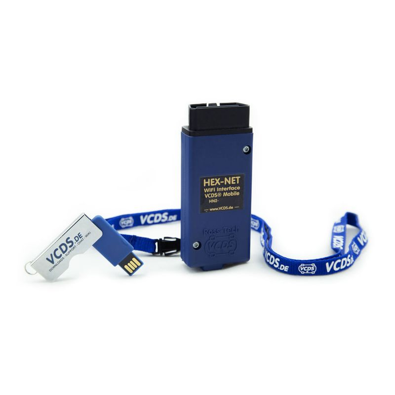
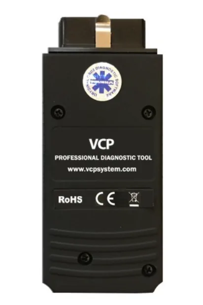
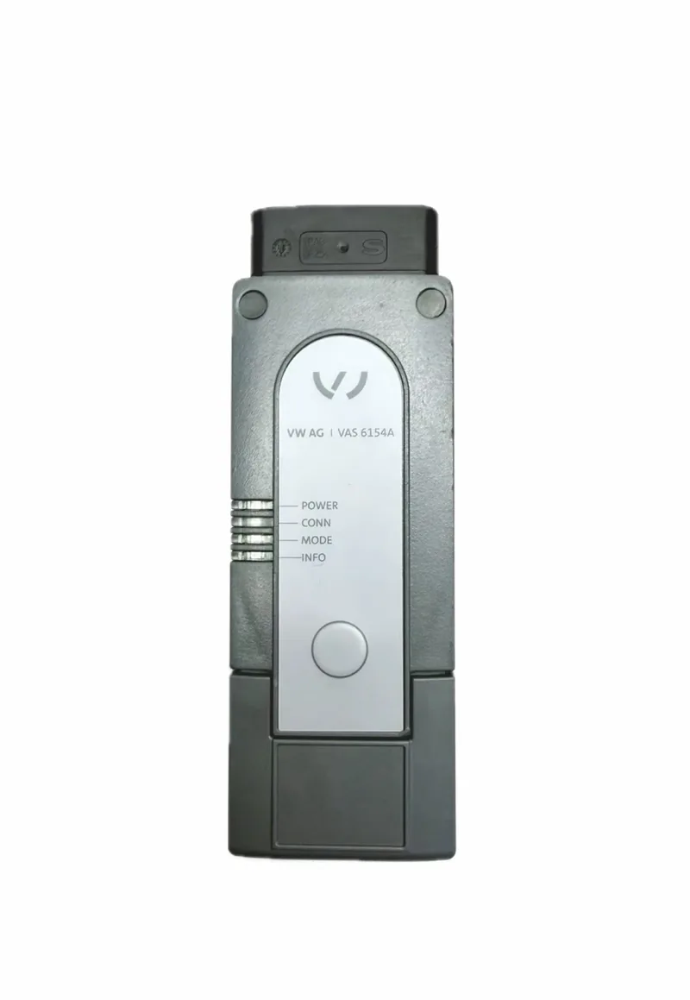
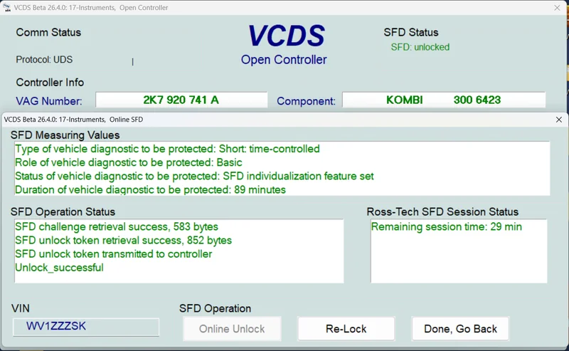
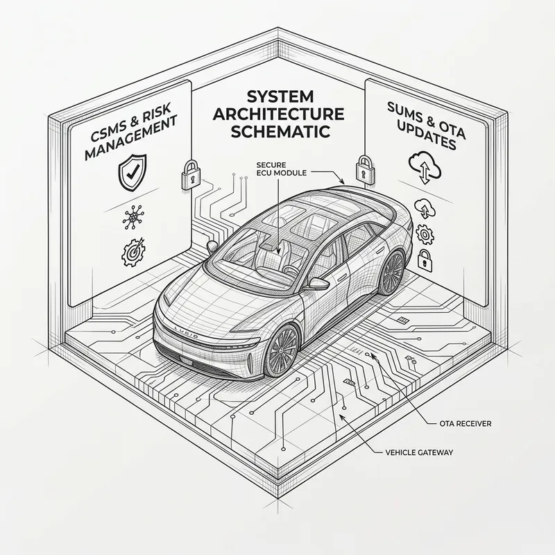
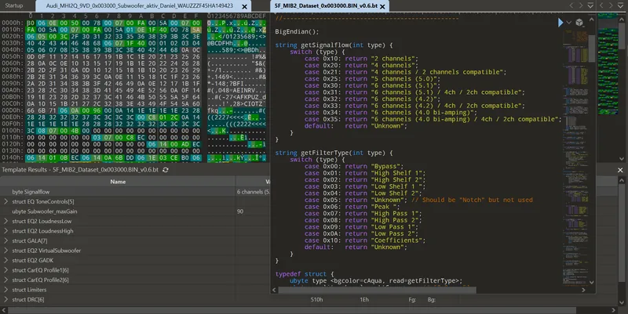

VCDS
Der Klassiker unter den Diagnose-Interfaces für den Volkswagen-Konzern: Fehlerspeicher auslesen und interpretieren, Grundeinstellungen, Codierung von Steuergeräten sowie erweiterte Messwertblöcke für die tiefergehende Fehlersuche.
Kompetenzen
Von der klassischen Diagnose bis zur sicherheitsrelevanten Steuergeräte-Konfiguration — die Werkzeuge und Regelwerke, mit denen ich täglich arbeite.
Von der klassischen Diagnose bis zur sicherheitsrelevanten Steuergeräte-Konfiguration — jedes Werkzeug und jede Norm hat ihren eigenen Anwendungsbereich.

Der Klassiker unter den Diagnose-Interfaces für den Volkswagen-Konzern: Fehlerspeicher auslesen und interpretieren, Grundeinstellungen, Codierung von Steuergeräten sowie erweiterte Messwertblöcke für die tiefergehende Fehlersuche.

Sicherer Umgang mit dem VW Communication Protocol / VCP-Tooling für neuere Fahrzeuggenerationen — inklusive gateway-basierter Kommunikation und der Besonderheiten moderner E/E-Architekturen.

Herstellernahe Diagnose mit ODIS Service und ODIS Engineering: Steuergeräte-Programmierung, Flash-Vorgänge, Guided Fault Finding und die Interpretation komplexer Prüfabläufe nach Konzernvorgaben.

SFD (Schutz Fahrzeug Diagnose) sowie die Weiterentwicklung SFD2 — das Sicherheitskonzept des Konzerns für den geschützten Zugriff auf sensible Steuergeräte. Freischaltung und Bearbeitung ausschließlich über die dafür vorgesehenen, offiziellen Zugangswege.

Beratung und Einordnung zu den UNECE-Regularien für Cybersecurity-Management (CSMS) und Software-Update-Management (SUMS) — relevant für Typgenehmigung, Nachrüstung und Diagnosefähigkeit moderner Fahrzeuge.

Fachgerechte Anpassung, Adaption und Konfiguration von Steuergeräte-Datensätzen — von der Codierung einzelner Funktionen bis zur Abstimmung ganzer Steuergeräte-Verbünde nach Fahrzeug- und Ausstattungsvariante.
Hintergründe und Praxiswissen zu einzelnen Themen finden Sie im Blog und in den Schulungen.
Sie brauchen Unterstützung in einem dieser Fachgebiete? Schildern Sie kurz Fahrzeug und Problemstellung.